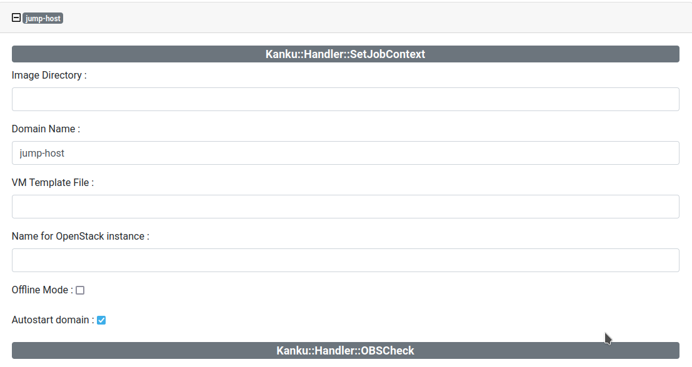

Release 0.12.0
FEATURES
- [web]
- new switch autostart to create persistent VM's
- added login route (for GET method)
- [cli]
- new command
kanku snapshot ... - new options for
kanku ssh ...:--ipaddressto specify the ip address of the VM (alias-i)--executeto execute a single command via ssh (alias-e)
- use ssh_user from KankuFile for ssh command
- new option:
--log_file/--log_stdoutfor VM related commands - Suggest running ssh-add on auth fauilure when auth_type is 'agent'
- new command
BUGFIXES
- [web]
- fix 'show only latest' in job history
- [core]
- no_wait_for_bootloader for ExecuteCommandsViaConsole to avoid waiting for bootloader
- Fix ssh key filename: id_ecdsa.pub_sk -> id_ecdsa_sk.pub
- various cleanups to avoid 'uninitialized value'
- [dist]
- fix tabs in default config template setup/kanku-config.yml.tt2
- K:H:PrepareSSH: fix permissions for user kanku
- K:H:CleanupIPTables: cleanup unused packages
- [util]
- set default for running_remotely in VM to 0
- [examples] updated configs
- updated to current opensuse
- deleted broken examples
- updated centos to latest version
- renamed centos -> centos-current
EXAMPLES
This release containes a full functional version of the "Kanku VM Autostart" feature for kanku clusters.
- Restart VMs
- Restore VMs iptable rules
